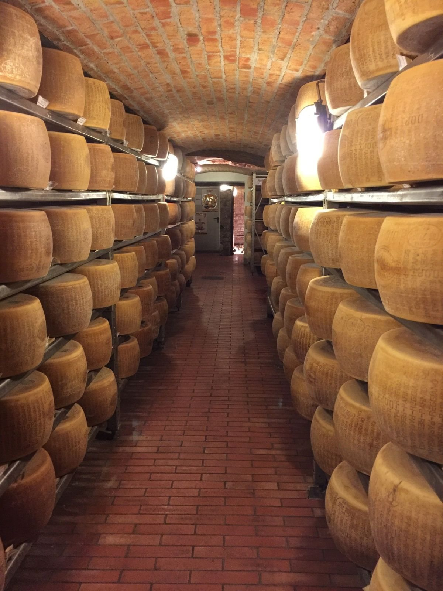

À la une · Histoire
치즈를 뒤집는 손,
숙성고에서 보내는 하루
Une journée dans la cave d'affinage

숙성고의 하루는 해가 뜨기 전에 시작됩니다. 장인은 선반 가장 아래 칸부터 휠을 하나씩 꺼내 소금물로 닦고, 뒤집어 다시 올려놓습니다. 같은 동작을 수백 번 반복하는 동안 손 끝은 치즈마다 다른 단단함과 온도를 읽어냅니다.
작은 망치로 휠을 두드려 속의 소리를 듣는 것도 이 일의 일부입니다. 맑게 울리면 숙성이 고르게 진행되고 있다는 뜻이고, 둔하게 울리면 다시 시간을 두고 지켜봐야 합니다.
그렇게 고른 치즈만이 문장이 찍힌 나무 상자에 담깁니다.